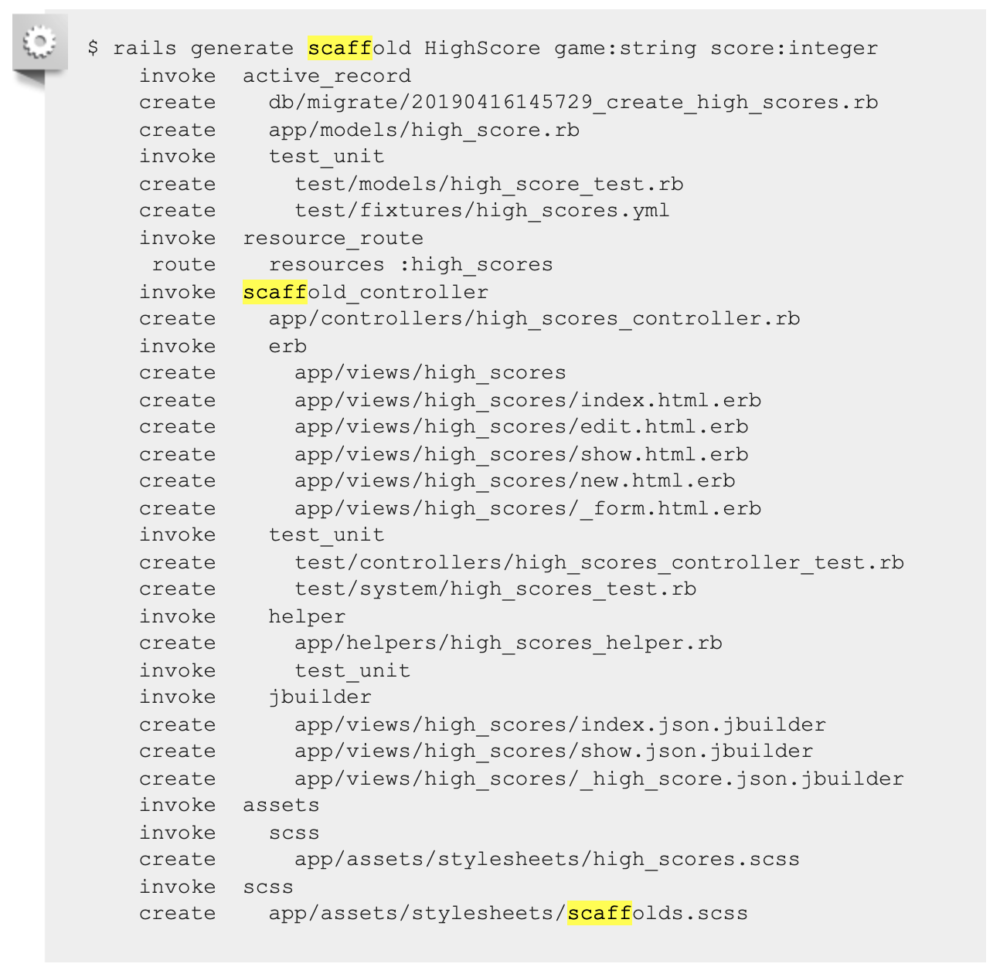

Rishav Baral
July 26th 2020
While trying to learn how to program and develop websites, I have come across many online resources telling me how they think I ought to go about learning how to code. While I am still a relatively new web developer, in the midst of my journey through a web development bootcamp, I thought my introspection on my favourite experiences on this journey might be of value to others who find themselves thinking about what the best approach to learning programming is. Thats why I decided to write this article about why I think Ruby on Rails is the best way to learn modern day web development technologies.
When learning about the various moving parts that go into a website, it can be daunting for beginners. For instance, it can be scary to configure a server and database, then have that server connect to that database, and THEN set up the routes, views and etc. At the end of it all, you will have written various lines of code, just to get one static page up and running. These config files were the main thing that I found discouraging as a new developer. While learning how to set up an express server in node.js does have its benefits, I would argue that for beginners, the most important thing is instant gratification.
The best experiences I have had as a beginner developer are when I am dealing with technologies with fast feed-back loops. If you look at the rails documentation for getting a blog app up and running, we see how quickly you can receive feedback for your work. Want to set up a rails project in a directory called blog?
Boom! You now have a rails directory AND with some boilerplate code that you can actually run and see a website with. You did not have to set up a server, you did not have to set up any HTML views, and you did not have to set up any routes, although you will have to later. As a novice developer, I would argue that this is pretty valuable in actually getting you to enjoy programming. I once thought that in order to learn programming effectively you have to start at the very fundamental low-level technologies like C or java, but that is a very overwhelming place to start if you do not have any experience programming. Sure you can build really small functions that will help teach you the fundamentals of looping or conditionals, but you will end up writing various lines of code just to achieve a small task. That may even discourage novices from learning.
Let me introduce to you another crazy piece of Rails magic.
In this example in the Rails documentation, the documentation is trying to create a site that will display the scores that you have gotten for particular games. With that one simple line at the top of the picture above (rails generate scaffold Highscore game:string score:integer), you have effectively created all the RESTful routes necessary interact with the Highscore model through your website. You just programmed! All it took was two small lines of code that you had to run through the command line! While you may not have any understanding of what RESTful routes even are, at least you feel good about yourself and you feel confident enough to now look through Ruby on Rails’ rich documentation to get an idea of what you just did.
Another point I wanted to bring up is that when you are learning a new skill for the first time, it always helps if there are a lot of valuable resources to help you along the way. While developers do pride themselves on their ability to figure things out for themselves, as beginners we have not developed that skill well enough yet. This is why when learning to program I would pick a language or technology that has the richest documentation.
Picture taken from https://naturaily.com/blog/who-gives-f-about-rails
This picture supports this point. As you can see over time, the number of questions asked on Stack Overflow about Ruby on Rails, trends downwards, while the opposite is true for node.js. This helps illustrate the idea that all the documentation and questions answered online about Ruby on Rails have already answered any questions you may have about it. The documentation and online resources are so rich that it makes it very suitable framework to learn as a beginner.
To be honest, in my opinion it really does not matter what language you decide to use in order to learn programming so long as it is relevant in todays tech industry. And despite what some developers who spent years learning C at a university might tell you, Rails is still very prevalent today. AirBnB, GitHub, Shopify, Twitch, Uber, and Twitter are all just a few examples of tech companies that have used or still use Rails for their applications. To conclude, Ruby on Rails is a framework that makes web development quick and easy, and consequently very gratifying as a novice developer. On top of that the online resources are extremely helpful, it really makes Rails a great platform to learn web development.